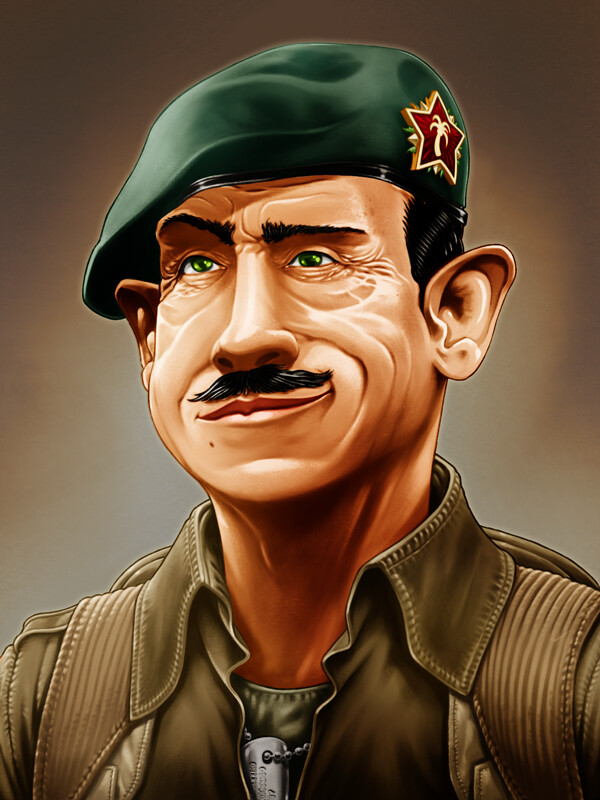

World & location design
Composition, architecture, atmosphere, scale and visual storytelling.
Case study · Hands-on Visual Development
A focused selection of hands-on visual development and environment research—demonstrating the craft, design judgement and production thinking behind my art-direction practice.
Why this page exists
My career moved progressively from hands-on creation into art direction, but I never separated leadership from the ability to solve visual problems directly. This page focuses on personal execution and the visual problem-solving that supports my direction work.
It complements the leadership case studies by showing the visual judgement and problem-solving skills that inform my feedback when directing artists.
Core capability
Consulting often starts with incomplete information, limited time or a production problem that cannot be solved by adding more documentation. The value is to understand the intent, explore the right options and communicate a useful direction fast.
Composition, architecture, atmosphere, scale and visual storytelling.
Silhouette, costume, role readability and design grounded in narrative purpose.
Functional architectural design built from history, technology and materials.
Guide the eye through scale, value, rhythm and focal structure.
Use light, color and spatial depth to reinforce the intended experience.
Clarify or correct an asset visually when words alone create ambiguity.
Method
Strong visual development is not the production of attractive images for their own sake. The image must answer a question the project actually has.
Selected work
These images are selected because they represent finished, shareable visual-development work. The emphasis is on design thinking, composition, architecture and world readability rather than volume.


What this proves
The other case studies prove direction, leadership, licensed-IP control and original world-building. This page proves the foundation underneath them: I can personally explore, design, paint, stage and communicate a visual solution when the project needs the Art Director to become hands-on.